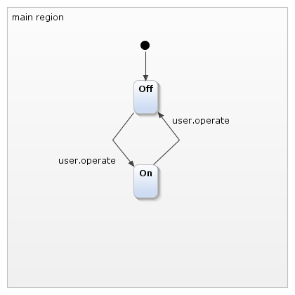

This statechart can be simulated, but the "Internal"-interface does not allow to use it with Code in a useful way.
This statechart can be simulated, but the "Internal"-interface does not allow to use it with Code in a useful way.A Series of examples that demonstrates multiple features of YAKINDU SCT. With each iteration, more features are shown. This example is a good starting point to dive into SCT head-first.
The most basic way to model a light switch. When the "operate"-event is raised, it changes between the "On"- and the "Off"-state, using an "Internal"-Interface.
This statechart can be simulated, but the "Internal"-interface does not allow to use it with Code in a useful way.
To use the statechart from code, you need an interface to it. This version has an interface named "user", so "user.operate" can be raised. 